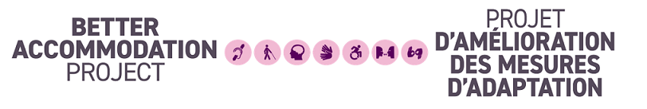

Bienvenue au Projet d’amélioration des mesures d’adaptation (PAMA)

Sommaire
- Bienvenue au Projet d’amélioration des mesures d’adaptation (PAMA)
- Pour commencer
- Renseignements supplémentaires sur le projet
En tant que sous-ministre championne des personnes en situation de handicap de la fonction publique fédérale, j’ai le privilège de travailler à la mise en place d’une fonction publique plus accessible, ancrée dans les valeurs et l’éthique de la fonction publique. L’engagement des employés fédéraux en situation de handicap à l’égard de la fonction publique est puissant et motivant. Nous bénéficions de leurs talents incroyables qui sont mis à profit quotidiennement dans l’intérêt de tous les Canadiens.
Je suis reconnaissante chaque fois qu’un employé en situation de handicap me fait confiance et me raconte son histoire. Ces histoires peuvent être difficiles à écouter parce qu’elles concernent des expériences profondément personnelles. Elles montrent également que, même si la fonction publique fédérale a accompli des progrès considérables en matière d’accessibilité et d’inclusion des personnes en situation de handicap, il reste encore beaucoup à faire.
Depuis que j’ai été nommée championne en novembre 2022, la préoccupation la plus fréquemment portée à mon attention est la façon dont nous accueillons les employés. Nombre de nos collègues nous ont expliqué que la manière de procéder du Ministère en ce qui concerne les mesures d’adaptation est souvent complexe, lourde sur le plan administratif, intrusive, lente et éprouvante d’un point de vue émotionnel.
Projet d’amélioration des mesures d’adaptation
En septembre 2024, en collaboration avec neuf ministères partenaires et la l’Unité de l’impact et de l’innovation du Bureau du Conseil privé, j’ai lancé le Projet d’amélioration des mesures d’adaptation (PAMA). D’une durée d’un an, le PAMA vise à entraîner un changement transformateur dans la façon dont les employés fédéraux en situation de handicap reçoivent des mesures d’adaptation à l’échelle de la fonction publique.
Le projet a permis de concrétiser une vision qui consiste à mettre en œuvre des mesures d’adaptation du lieu de travail exemplaires qui :
- tiennent compte du modèle social du handicap;
- sont opportunes, cohérentes, inclusives et adaptées;
- permettent aux employés fédéraux en situation de handicap d’obtenir le soutien dont ils ont besoin pour s’épanouir dans leur emploi, quel que soit leur lieu de travail.
Je tiens à exprimer ma gratitude envers neuf de mes collègues qui ont participé à ce projet. J’aimerais également remercier l’Unité de l’impact et de l’innovation du Bureau du Conseil privé pour son expertise et pour avoir réalisé les « examens des obstacles » de nos processus respectifs relatifs aux mesures d’adaptation du lieu de travail. Un examen des obstacles permet de repérer et d’éliminer les obstacles inutiles qui rendent le processus plus ardu, plus lent, plus coûteux ou plus frustrant qu’il ne devrait l’être.
Outre ces examens, l’équipe du PAMA a collaboré avec des fonctionnaires [lien vers le rapport « Ce que nous avons entendu »] et des organisations privées et sans but lucratif. Elle s’est appuyée sur l’information recueillie pour élaborer des outils innovants, fondés sur des données probantes, pour le PAMA dans le but d’aider les ministères et les organismes à mettre en œuvre des mesures d’adaptation du lieu de travail exemplaires. Ces outils s’appuient sur des projets gouvernementaux antérieurs et sont fondés sur la recherche, les expériences vécues par les employés et ce que nous avons appris et mis l’essai jusqu’à présent. Ils sont conçus pour aider chaque ministère à agir dès maintenant pour améliorer sa prestation des services liés aux mesures d’adaptation du lieu de travail. Bien qu’ils ne soient pas parfaits, ces outils cadrent avec les objectifs de la Loi canadienne sur l’accessibilité et de la Stratégie sur l’accessibilité au sein de la fonction publique.
En tant que premier employeur du Canada, le gouvernement fédéral se doit de montrer l’exemple et d’utiliser ses ressources avec sagesse. L’amélioration des mesures d’adaptation du lieu de travail ne consiste pas à dépenser plus d’argent. Il s’agit plutôt de simplifier notre manière de procéder et d’améliorer le fonctionnement de nos processus internes pour les employés en situation de handicap. Nos recherches démontrent que le coût modeste associé aux mesures d’adaptation est largement inférieur au coût engendré par la perte de productivité causée par nos processus et par le fait de ne pas offrir les mesures de soutien en temps voulu ou de n’en offrir aucune.
J’invite donc tous les ministères et organismes à utiliser ces ressources et à les faire connaître. Ensemble, faisons progresser, avec détermination et sans attendre, notre objectif de devenir la fonction publique la plus accessible et la plus inclusive au monde!
Sincères salutations!
Tina Namiesniowski
Sous-ministre championne des employés en situation de handicap de la fonction publique fédérale
Pour commencer
Les mesures d’adaptation du lieu de travail relèvent d’une collaboration entre de multiples équipes. En consultant le document, vous remarquerez que chaque trousse d’outils s’adresse à un public précis. Ces outils font référence les uns aux autres en ce qui concerne les principaux points, et guident les lecteurs vers des considérations plus approfondies ou des sujets connexes. Nous vous recommandons de commencer par la trousse d’outils qui correspond le mieux à vos besoins.
Vous trouverez également de plus amples renseignements sur le projet et nos recherches à la section « Renseignements supplémentaires sur le projet ».
Trousse d’outils des organisations
Description
- Cette trousse sert à aider les administrateurs généraux à évaluer la maturité actuelle du modèle de prestation des services liés aux mesures d’adaptation du lieu de travail au sein de leur ministère ou organisme. Elle fournit une feuille de route et des outils visant à aider les organisations à mettre en œuvre les principaux facteurs de réussite d’un modèle de prestation de services de mesures d’adaptation du lieu de travail exemplaires.
- Cette trousse est axée sur la conception organisationnelle. Elle a pour objectif de promouvoir le changement organisationnel dans les ministères et les organismes afin que ces derniers puissent mettre en place un processus de mesures d’adaptation du lieu de travail plus efficace et plus cohérent et améliorer l’expérience des employés.
Marche à suivre par les organisations pour mettre en œuvre la trousse d’outils du PAMA
- Évaluez le niveau de maturité actuel de votre ministère ou organisme en remplissant l’outil d’autoévaluation. Cet outil mesure la maturité d’une organisation par rapport aux principaux facteurs de réussite définis par le PAMA pour obtenir un modèle de prestation de services de mesures d’adaptation du lieu de travail exemplaires.
- Améliorez votre modèle en vous appuyant sur nos orientations concernant :
- la manière de mettre en œuvre les principaux facteurs de réussite;
- la manière de créer un centre d’expertise sur les mesures d’adaptation du lieu de travail;
- la manière de mettre en œuvre la version numérique du Passeport pour l’accessibilité en milieu de travail.
- Donnez à votre centre d’expertise les ressources nécessaires pour soutenir les employés et les gestionnaires
au moyen d’un processus efficace et inclusif qui comprend :
- un schéma du processus lié aux mesures d’adaptation du lieu de travail du PAMA;
- des conseils à l’intention des centres d’expertise pour qu’ils soutiennent les employés et les gestionnaires tout au long de la démarche de mesures d’adaptation du lieu de travail.
- Suivez et améliorez les résultats de votre modèle de prestation de services en utilisant le cadre de mesure du
rendement que nous vous proposons, qui comprend :
- un modèle logique;
- des propositions d’indicateurs de rendement clés;
- la marche à suivre pour établir des normes de service.
Trousse d’outils des utilisateurs de services
Description
- Cette trousse a pour but d’aider efficacement les employés et les gestionnaires tout au long de la démarche de mesures d’adaptation du lieu de travail.
- Elle constitue un bon point de départ pour les employés et les gestionnaires qui souhaitent mener des discussions fructueuses sur des mesures d’adaptation du lieu de travail. Elle fournit des conseils et des outils qui peuvent aider les utilisateurs à chaque étape de la démarche. Son objectif est de susciter des discussions respectueuses sur les mesures d’adaptation du lieu de travail et de favoriser la mise en œuvre de solutions en temps opportun.
Marche à suivre par les utilisateurs de services pour accéder à leur trousse d’outils du PAMA
- Familiarisez-vous avec l’ensemble de la démarche (lien vers le schéma du processus) afin de savoir à quoi vous attendre, quel est votre rôle et comment franchir chaque étape.
- Consultez votre fiche de conseils respective, selon votre rôle, et passez à l’étape qui correspond le mieux à votre situation :
- Conseils pour aider les employés dans la démarche de mesures d’adaptation du lieu de travail
- Des mesures d’adaptation du lieu de travail réussies grâce à des comportements efficaces
- Liste de vérification pour les gestionnaires
- Liste de vérification pour les employés
- Des mesures d’adaptation du lieu de travail réussies grâce à des comportements efficaces
- Conseils pour aider les gestionnaires dans la démarche de mesures d’adaptation du lieu de travail
Liens rapides aux trousses d'outils du PAMA
| Section | Sous-section | Nom et lien |
|---|---|---|
| Marche à suivre pour les organisations pour mettre en oeuvre la trousse d'outils du PAMA | 1. Évaluer le niveau de maturité actuel de votre ministère ou organisme | Outil d'autoévaluation de la maturité |
| 2. Améliorer la maturité et renforcer votre modèle de prestation de services | Modèle de maturité pour un modèle de prestation de services de mesures d'adaptation du lieu de travail de
premier ordre
Comment créer un centre d’expertise de mesures d’adaptation du lieu de travail pour les employés en situation de handicap |
|
| 3. Donner à votre centre d'expertise les ressources nécessaires pour soutenir les employés et les gestionnaires au moyen d'un processus efficace et inclusif | Schéma du processus lié aux mesures d'adaptation du lieu de travail
Conseils pour naviguer le parcours lié aux mesures d’adaptation du lieu de travail pour les employés en situation de handicap – centre d’expertise |
|
| 4. Suivez et améliorez les résultats de votre modèle de prestation de services | Cadre de mesure du rendement
Modèle logique pour un modèle de prestation de services de mesures d'adaptation du lieu de travail de premier ordre |
|
| Marche à suivre par les utilisateurs de services pour accéder à leur trousse d'outils du PAMA |
1. Schéma du processus |
Schéma du processus lié aux mesures d'adaptation du lieu de travail |
| 2. Liste de vérification pour les gestionnaires et les employés | Des mesures d'adaptation du lieu de travail réussies grâce à des comportements efficaces | |
| 3. Conseils pour les employés | Conseils pour naviguer le parcours lié aux mesures d’adaptation du lieu de travail pour les employés en situation de handicap – Employé | |
| 4. Conseils pour les gestionnaires | Conseils pour naviguer le parcours lié aux mesures d’adaptation du lieu de travail pour les employés en situation de handicap – Gestionnaire |
Outils et prototypes des partenaires de mise en oeuvre
| Nom | Ministère ou agence |
|---|---|
| Appli OCAMA pour les solutions de mesures d'adaptation du lieu de travail | Équipe du PAMA |
| Outil de suivi de la gestion des cas | Équipe du PAMA |
| Inventaire des solutions de mesures d'adaptation du lieu de travail du Programme d'accessibilité, d'adaptation et de technologie informatique adaptée | Accessibilité, adaptation et technologie informatique adaptée (AATIA) |
| Gabarit de communication avec des renseignements à propos des fournisseurs de services à l’intention des gestionnaires | Innovation, Sciences et Développement économique Canada (ISDE) |
| Guide à l’intention des gestionnaires : Accéder au financement centralisé pour les mesures d’adaptation du lieu de travail | Agriculture et Agroalimentaire Canada (AAC) |
| Guide à l’intention des gestionnaires : Mener des discussions sur les mesures d’adaptation du lieu de travail | Patrimoine canadien (PCH) |
| Guide à l’intention des gestionnaires : Demander des renseignements médicaux pour les mesures d’adaptation du lieu de travail | Ministère de la Justice Canada |
| Pages Intranet du Centre d’expertise sur les mesures d’adaptation du lieu de travail
Vidéo démontrant les pages intranet du centre d'expertise |
Relations Couronne-Autochtones et Affaires du Nord Canada (RCAANC) |
| Exercice visant à redéfinir l’image de marque du Centre d’expertise sur les mesures d’adaptation du lieu de travail | Emploi et Développement social Canada (EDSC) et Patrimoine canadien (PCH) |
| Formulation utilisée dans les lettres d’offre concernant les mesures d’adaptation du lieu de travail | Emploi et Développement social Canada (EDSC) |
Renseignements supplémentaires sur le projet
- Aperçu du PAMA
- Infographie - Pourquoi investir dans l’amélioration des mesures d’adaptation du lieu de travail pour les employés en situation de handicap?
- Rapport « Ce que nous avons entendu »
- Rapport « S'attaquer aux obstacles dans le processus de mesures d'adaptation du lieu de travail »
- Prochaines étapes pour le PAMA